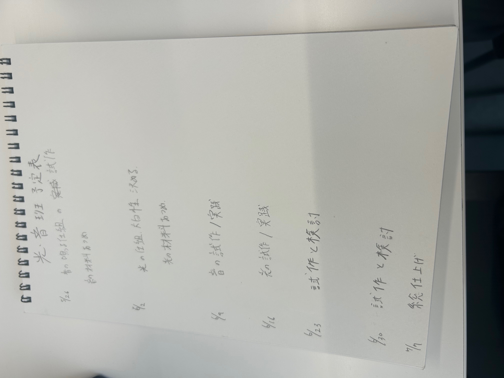
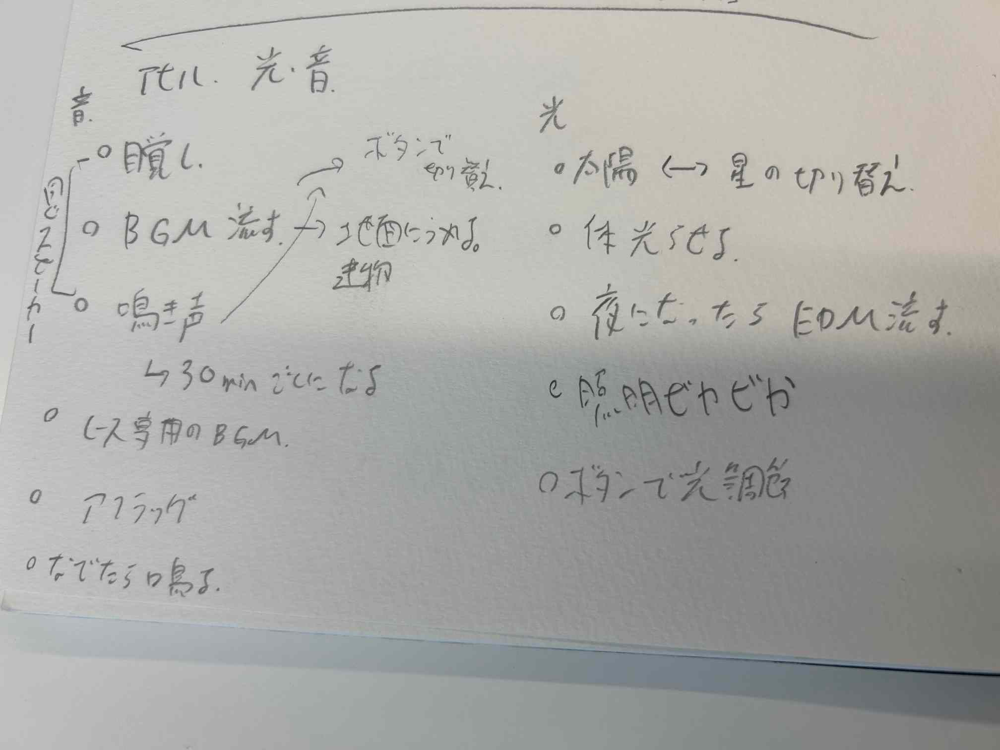
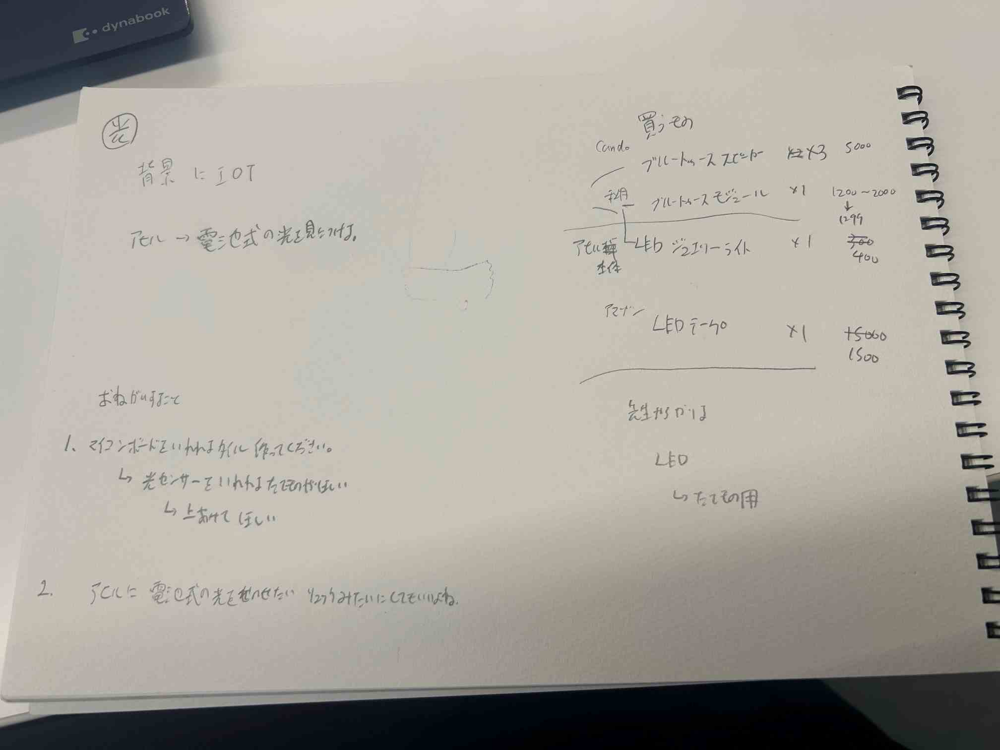
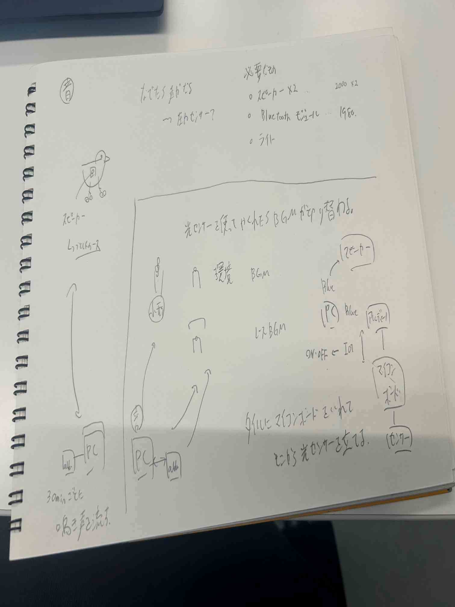

最終課題
世界一のアヒル制作
担当 音・光
・スケジュール

・プロセスメモ
■は考えなといけないこと
●は具体的にやること
→はやったこと
光と音でやってみたいこと

■やりたいことをある程度絞らないと
→絞ってみて簡単にやり方を考えてみた
光

■どうやって光らせる
●ひよこの本体や大通りなどはLEDでいいのかも逆に建物のなかは光らせにくいためIOTを使って遠隔がいいのかな
→ライトを買ってみた
■どうやって建物の中光らせよう
●IOTとアルディーノを使って遠隔でも光らせたり消したりできるようにする
→学んだことを思い出しながらプログラム組んでみた
音

■音の鳴らし方
→コードが引っかかるのがいやだからBluetoothのスピーカー買ってみた
■磁力センサーでゴールの演出をしたい
→磁力センサーを買う、次回テスト
To Do リスト
0616 磁力センサーテスト
アヒル本体の鳴き声プログラム試作
0/1切り替えを使って秒数ランダムと別の鳴き声を使い分ける
進み次第 BGMを決める
鳴き声を決める
本体に磁石を入れたい